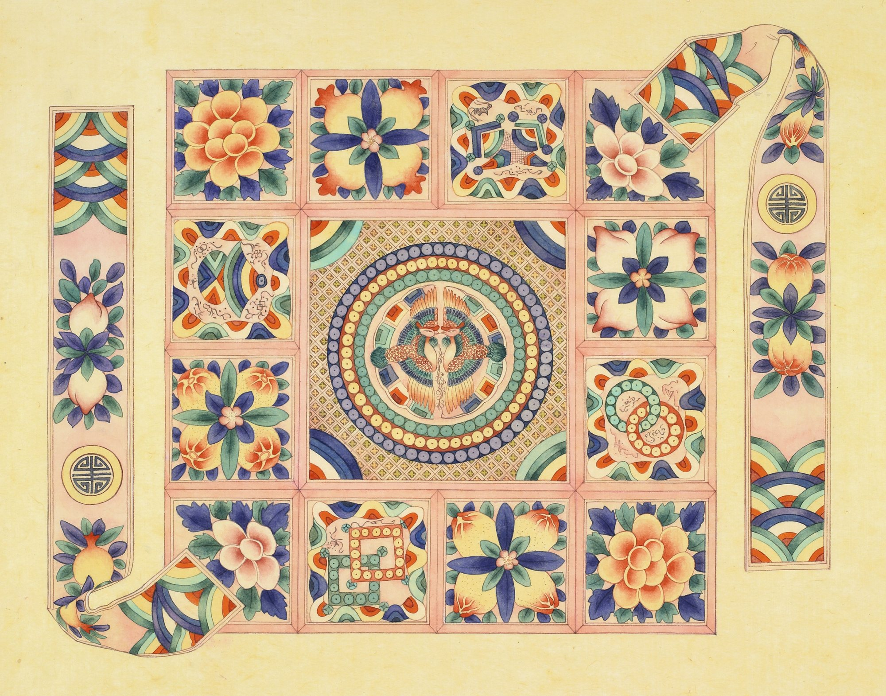

민화 · Korean Folk Painting — Bayside, Queens, NY
김지애 Jiae Kim
호 시우(時雨) · Si-WooSi-Woo 時雨 · 시우
조선 후기 민화의 재료와 기법 그대로 — 분채와 먹, 한지 위에 그림에 담긴 복(福)을 오늘의 뉴욕으로 옮겨 그립니다.
Working in the late-Joseon folk painting tradition — mineral pigments and ink on hanji — carrying the paintings' old blessings into present-day New York.
작품Gallery
분채와 먹, 한지 — 모든 작품은 전통 재료로 제작되었습니다. 그림을 누르면 크게 볼 수 있습니다.
All works: ground mineral & shell pigment (bunchae) and ink on hanji. Tap a painting to view it larger.
궁모란도 Court PeoniesCourt Peonies 궁모란도
2025 · 분채·먹, 한지mineral & shell pigment and ink on hanji · 30 × 60 in
연지쌍압도 Lotus Pond with a Pair of Mandarin DucksLotus Pond with a Pair of Mandarin Ducks 연지쌍압도
2025 · 분채·먹, 한지mineral & shell pigment and ink on hanji · 30 × 55 in
봉황문인문보 Phoenix-and-Auspicious-Pattern Wrapping ClothPhoenix-and-Auspicious-Pattern Wrapping Cloth 봉황문인문보
2025 · 분채·먹, 한지mineral & shell pigment and ink on hanji · 40 × 25 in
동백 CamelliasCamellias 동백
2024 · 분채·먹, 한지mineral & shell pigment and ink on hanji · 12 × 18 in
모란화조도 Peonies with Paired BirdsPeonies with Paired Birds 모란화조도
2024 · 분채·먹, 한지mineral & shell pigment and ink on hanji · 12 × 18 in
연잎과 봉오리 Lotus Leaves and BudLotus Leaves and Bud 연잎과 봉오리
분채·먹, 한지mineral & shell pigment and ink on hanji · 17.7 × 17.7 in (45 × 45 cm)
재현 모사 — 박물관 소장 옛 그림을 따라 그린 수련작Studies after museum paintings (jaehyeon)
조선의 민화는 이름 없는 화가들이 손에서 손으로 본을 옮기며 전해졌습니다. 재현 모사는 그 전승 방식 그대로 옛 그림을 한 폭씩 따라 그리는 수련이며, 위의 작품들은 이 수련 위에서 새로 구성한 그림들입니다.
Joseon folk painting was passed from hand to hand by anonymous painters copying model drawings. Jaehyeon is that training: painting a museum-held original panel by panel. The works above are my own compositions built on it.
사계화 — 1부 Four Seasons of Flowers — Part IFour Seasons of Flowers — Part I 사계화 — 1부
2024 · 재현 모사 · 분채·먹, 한지study after Flowers, Brooklyn Museum · mineral & shell pigment and ink on hanji · 25 × 30 in
사계화 — 2부 Four Seasons of Flowers — Part IIFour Seasons of Flowers — Part II 사계화 — 2부
2024 · 재현 모사 · 분채·먹, 한지study after Flowers, Brooklyn Museum · mineral & shell pigment and ink on hanji · 25 × 30 in
민화 처방전Minhwa Prescription
약 대신 그림을 처방해드립니다.
A painting, prescribed for your wish.
안내 카드 (한국어)Announcement card (Korean)
옛사람들은 소원을 말하는 대신, 그림으로 그려 벽에 걸었습니다. 부귀를 바라면 모란을, 화목을 바라면 한 쌍의 새를, 변치 않는 마음을 바라면 한겨울의 동백을. 당신의 소원에는 어떤 그림이 필요할까요?
In old Korea, people didn't just speak their wishes — they hung them on the wall. Peonies for prosperity, birds in loving pairs for a happy home, winter camellias for a love that never fades. What painting does your wish need?
참여 방법HOW IT WORKS
이메일 또는 인스타그램 DM으로 두 가지만 보내주세요 — ① 그림을 걸고 싶은 벽 사진 한 장, ② 요즘 가장 바라는 소원 한 가지. 답장으로 소원에 맞는 민화 한 점과 그림에 담긴 상징 이야기, 당신의 벽에 걸린 모습 미리보기를 보내드립니다.
Email me, or DM me on Instagram, with two things — ① a photo of the wall you'd like to fill, ② one thing you're wishing for these days. You'll receive the minhwa that matches your wish, the story behind it, and a preview of the painting on your own wall.
처방은 무료이고, 부담은 없습니다. 처방전에는 유효기간이 없어요.The prescription is free, no strings attached — and it never expires.
궁모란도 · 부귀영화Royal Peony · Wealth & Honor
연화도 · 화합과 평안Lotus · Harmony & Peace
동백화 · 변치 않는 사랑Camellia · Everlasting Love
화조도 · 부부금슬Birds & Flowers · A Loving Home
소개About
안녕하세요, 뉴욕 퀸즈 베이사이드에서 민화를 그리는 김지애입니다.
조선 후기 민화의 전통 그대로 — 돌과 조개를 갈아 만든 분채를 아교에 개어, 한지 위에 얇게 여러 번 쌓아 올립니다.
민화는 본래 집안의 그림이었습니다. 모란은 부귀를, 연꽃은 맑음을, 원앙 한 쌍은 화목을 빌었지요. 그림마다 담긴 이 복(福)의 언어를 오늘의 퀸즈로 옮겨 그리는 것이 제 작업입니다 — 처음에는 한인 이민 가정을 위해, 이제는 출신을 가리지 않는 이웃들을 위해.
형식을 현대화하지는 않습니다. 바꾸는 것은 그림이 누구를 위한 것인가입니다.
지닐민화 조현주 선생님 문하에서 수학했으며, K-Color Link의 창립 리드 아티스트로 퀸즈 곳곳에서 한·영 이중언어 무료 민화 워크숍을 엽니다. 2026년에는 베이사이드 역사협회(BHS Castle)에서 전시 Moon and Bloom을 기획하고 2주간 오픈 스튜디오 레지던시를 했습니다.
I am a minhwa painter based in Bayside, Queens.
I work in the late-Joseon Korean folk painting tradition with its original materials: ground mineral and shell pigments (bunchae) bound with hide glue, built up in thin layers on handmade hanji paper.
Minhwa was the painting of the household. Peonies wished a family wealth and honor, the lotus purity, a pair of mandarin ducks harmony. My work carries that language of blessing into present-day Queens — first for Korean immigrant households, now for neighbors of every origin.
I do not modernize the form; I change whom it is for.
I trained in the Jinil Minhwa lineage under master painter Hyun-joo Cho. As founding lead artist of the K-Color Link collective I lead free bilingual minhwa workshops across Queens, and in 2026 I organized Moon and Bloom at the Bayside Historical Society, with a two-week open-studio residency.
호(號)는 시우(時雨) — '때맞춰 내리는 비'라는 뜻입니다. 그림이 누군가의 벽에서, 꼭 필요한 순간에 내리는 단비가 되기를 바라는 마음을 담았습니다.
I paint under the artist name Si-Woo (時雨) — "timely rain" — in the hope that each painting arrives on someone's wall at just the moment it is needed.
전시Exhibitions
스튜디오Studio
커미션, 프린트, 그리고 한 달에 한 번의 편지.
Commissions, prints, and a letter once a month.
커미션Commissions
결혼·돌·개업 선물을 위한 축원 민화, 소형 원화 커미션을 소량으로 받습니다. 원하시는 상징(모란·연꽃·원앙 등)과 크기를 알려주세요.
I take a small number of commissions — blessing paintings for weddings, first birthdays, and new beginnings. Tell me the symbols and size you have in mind.
프린트 · 컬러링 도안Prints & Coloring PDFs
원화 기반 아트 프린트와 민화 컬러링 도안 PDF를 준비하고 있습니다. 뉴스레터로 오픈 소식을 가장 먼저 알려드릴게요.
Art prints and minhwa coloring-page PDFs are in the works — newsletter readers hear first.
뉴욕 그림 편지A Letter from the Studio
한 달에 한 번 — 신작과 작업 과정, 전시 소식을 담아 보냅니다.Once a month — new work, process notes, and exhibition news.